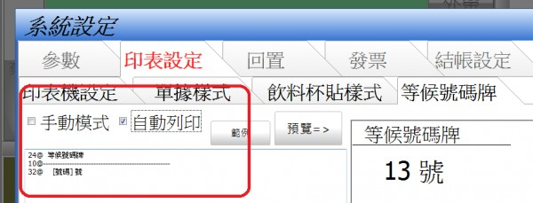
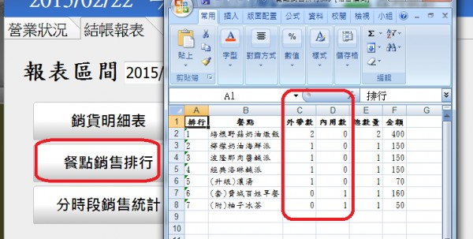

你好，
1. 我下載了試用版測試，大致上還算滿意，可是，如果在使用中登出系統，再登入後，所有輸入的資料會全數消失，請問換了正式版本，這情形會發生嗎？
2. 號碼牌在手動模式下，產生的等候號跟出單序號沒有同步，而結賬單上也看不到等候號碼，這樣怎麼知道某張號碼牌等待的餐點是在那一張餐單上？除非使用自動模式，但在離峰時，這樣實在是很浪費紙張，請問這點是否可以改善？
3. 統計欄所統計的數字，看不出是內用還是外帶，這點能不能更改？如果可以，再配合加大統計欄位，這樣是不是更完美？
你好，
1. 我下載了試用版測試，大致上還算滿意，可是，如果在使用中登出系統，再登入後，所有輸入的資料會全數消失，請問換了正式版本，這情形會發生嗎？
2. 號碼牌在手動模式下，產生的等候號跟出單序號沒有同步，而結賬單上也看不到等候號碼，這樣怎麼知道某張號碼牌等待的餐點是在那一張餐單上？除非使用自動模式，但在離峰時，這樣實在是很浪費紙張，請問這點是否可以改善？
3. 統計欄所統計的數字，看不出是內用還是外帶，這點能不能更改？如果可以，再配合加大統計欄位，這樣是不是更完美？
您好
1.正式版也是如此，按下設定->打烊->結束系統
表示您要結束當日營業 系統會將未結的單據自動結單 ，全數寫入資料庫， 結帳報表中便可查詢到歷史資料
如果您只是要暫時離開系統用電腦做其他的事(如修改菜單),
可按右下角的時間->暫回桌面

2.浪費紙張問題 ，系統可以自訂號碼牌字型大小， 可有效的節省紙張使用問題

3.站長會在下個版本 在結帳報表中的餐點銷售排行報表 加入內用數和外帶數
